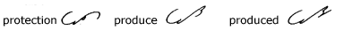

Unit
15
Omission of Short U and Ow
124.
In the body of a word short u and ow
are omitted before n and m, and short u
before straight downstrokes.
125.
Between n-n, ow is indicated by a jog, as
in announce; short u is inserted between n-n,
n-m, as in nun and numb; moun
is expressed by the men blend, as in mountain.
126.
The u is omitted in the termination sume:
Joined Prefixes and Suffixes
127.
The syllables per, pro, pur, are
expressed by pr; the syllable ble, by b;
ple, by p (in the words given below only); ment,
by m:

128.
When pro occurs before an upward character or k,
it is more convenient to insert the vowel, as in:

129.
Two or more simple prefixes may be joined:
*The initial vowel is not required
in compound prefixes.
130. Brief
Forms for Common Words

131. Reading
and Dictation Practice
132. Writing
Practice
1. You are quite right in saying
that the price was too high and that the whole order of cereals
should be returned. I should think that they could quote lower prices,
owing to their greater purchasing power.
2. An ounce or so of light motor oil spread
on the leaves of the springs of your car will banish all squeaks.
3. The boy’s singing was enjoyed by his
many friends who came to hear him in the huge hall of the Armory.
4. His office was equipped with several filing
cases and a new type of filing desk.
5. The news of his appointment was announced
over the radio at a special coast-to-coast hook-up.
6. He reduced the output of his mill to a million
feet of~ lumber per day during the dull season.
7. His profits in oil were higher this month
than they were in the month before.
Dear
Sir: I should like to enlist your aid in preparing an evening of
music to be given early in January on behalf of our Home Welfare
Organization.
I think we should have a generous
number of arias from the leading operas and a few piano and violin
solos. Perhaps we could also get Mr. Hoyle to give his talk on the
poetry of music. We must not forget also to present some numbers
for the enjoyment of the children who will be present.
Will you not join with us in helping
to arrange something of an unusually high character this year? Yours
truly,
Transcription Key to this
Unit
- Next Unit - |